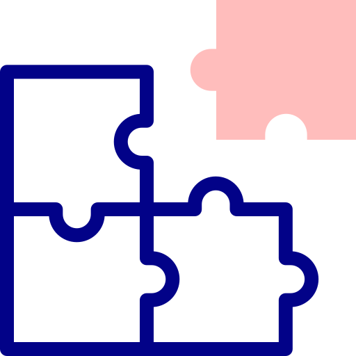

Problema | Impactos Negativos
O problema, o qual buscamos resolver, é a comunicação com os pais. A falta de comunicação gera extresse, ansiedade e preocupação.
Solução | Impactos Positivos
A solução proposta pelo code nexus é uma plataforma acessível, a qual facilita para os familiares acompanharem o estado do tratamento do paciente além dos médicos poderem avisar de uma forma mais acessível para quem está esperando do lado de fora.